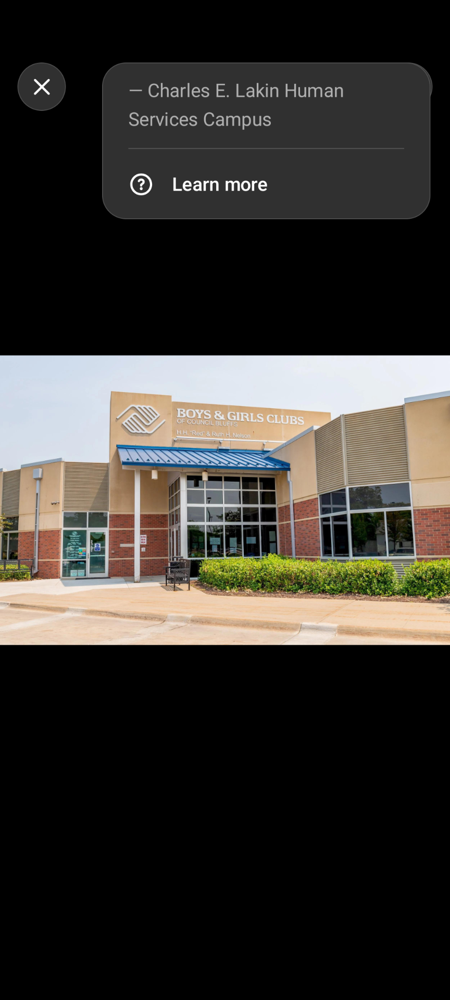
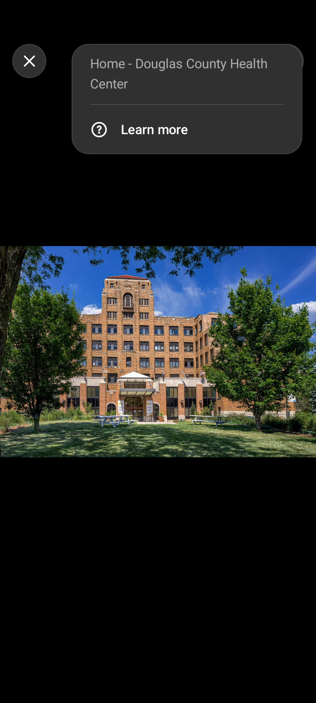

Welcome to Shamus's bioSite
A look into his life, interests, and accomplishments.
Featured Highlights
Thomas Jefferson High School
Shamus helped design part of a school addition through "Project Lead the Way".

Boys & Girls Club
Shamus donated money from art competitions to help the club stay open.

Douglas County Health Center
Shamus has worked here for several years and hopes to earn his pension in a couple more years.